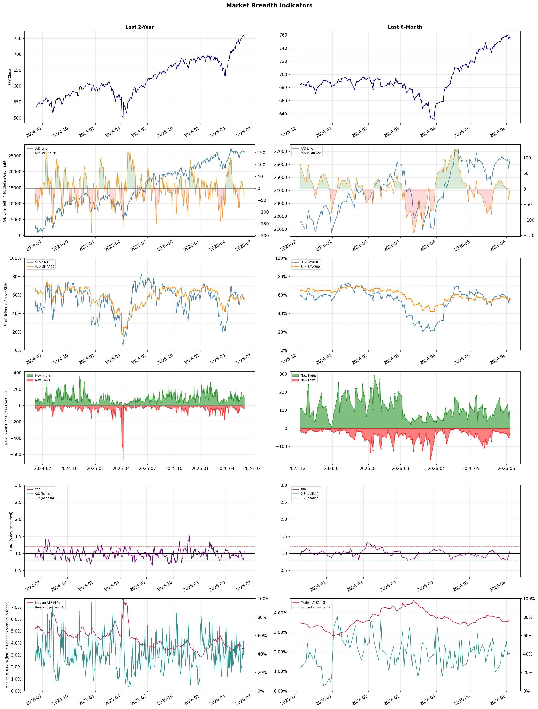

A daily research map of market breadth, industry rotation, and technical setups
| Item | Read |
|---|---|
| Regime | Selective Risk-On |
| Risk posture | Selective |
| Indices | QQQ 740.61 (-0.5% today) |
| Universe | 1,703 stocks tracked · 96 new 52-week highs · 30 active swing setups |
| Breadth | 56.3% of tracked stocks are above SMA50 — neutral range, new highs exceed new lows (96 vs 31) |
| Leadership | Computer Hardware, Semiconductors, and Solar |
| Weakest groups | Household & Personal Products, Packaged Foods, and Restaurants |
Use this report to prioritize research and chart review; validate entries, stops, liquidity, earnings, and risk before acting.
| Item | Read |
|---|---|
| Primary read | Selective Risk-On regime with Selective risk posture. |
| Research queue | DELL, SNDK, IONQ, SMCI, HPQ |
| Leadership focus | Computer Hardware, Semiconductors, and Solar |
| Caution list | Household & Personal Products, Packaged Foods, and Restaurants |
| Review prompt | Check extension risk, chart location, fundamentals, valuation, and earnings before using any research row. |
| Item | Read |
|---|---|
| Primary read | 1 active risk warnings; use screen output as watchlist input only. |
| Bullish screens | ALGM, ODFL, WERN, APLE, DRH |
| Bearish screens | CELH, LU |
| Alerts / levels | Automated trigger, stop, ATR, liquidity, reward/risk, and event-risk levels are pending future enrichment. |
| Review prompt | Open the linked chart, define trigger and invalidation, then check liquidity and event risk independently. |
Risk Posture: Selective — screen backdrop supports selective research in leading industries
Metric context: McClellan below -50 = elevated selling pressure; below -100 = washout territory. Range Expansion = share of stocks with daily range above their 20-day average. Signal Density = share of tracked names appearing in signal screens.
| Breadth Date | % > SMA50 | % > SMA200 | New Highs | New Lows | McClellan | Median Range | Avg Range | Median ATR14 | Range Expansion | Signal Density |
|---|---|---|---|---|---|---|---|---|---|---|
| 2026-06-04 | 56.3% | 56.4% | 96 | 31 | 0.6 | 3.1% | 3.7% | 3.6% | 40.5% | 6.1% |

Prior comparison date: June 3, 2026
| Metric | Prior | Current | Change |
|---|---|---|---|
| Regime | Selective Risk-On | Selective Risk-On | unchanged |
| Risk Posture | Selective | Selective | unchanged |
| % > SMA50 | 51.3% | 56.3% | +5.0 pts |
| % > SMA200 | 53.8% | 56.4% | +2.6 pts |
| New Highs | 63 | 96 | +33 |
| New Lows | 49 | 31 | +18 |
Top-10 industries entering: Healthcare Plans and Semiconductor Equipment & Materials. Top-10 industries leaving: Copper and Steel. New multi-signal long setups: ABBV, CPT, DFTX, DGX, EA, HUM, JBHT, KLAC. New multi-signal short setups: CELH, LU.
| Status | Tickers | Read |
|---|---|---|
| Added | ABBV, CELH, CPT, DFTX, DGX, EA, HUM, JBHT | New technical screen matches vs prior report. |
| Removed | AEHR, ALAB, AMAT, AMD, BWA, CPRT, FLEX, FLYW | No longer present in today's technical screen matches. |
| Still Active | ALGM, APLE, DRH, FAST, HST, STLD, TXG, WERN | Appeared in both current and prior reports. |
| Promoted | none | Model Screen Score improved by at least 15 points. |
| Downgraded | none | Model Screen Score declined by at least 15 points. |
| Direction | Industry | ETF | Prior Rank | Current Rank | Days | Rank Change |
|---|---|---|---|---|---|---|
| Rose | Solar | TAN | 92 | 3 | 42 | +89 |
| Rose | Diagnostics & Research | N/A | 96 | 13 | 42 | +83 |
| Rose | Copper | COPX | 89 | 14 | 35 | +75 |
| Rose | Health Information Services | N/A | 86 | 19 | 42 | +67 |
| Rose | Airlines | N/A | 96 | 30 | 35 | +66 |
Bull: The solar industry is experiencing a significant rise in relative strength due to a confluence of favorable macroeconomic factors and a shift in energy consumption trends, as highlighted by the recent headlines. The dramatic 120% gain over the past five months suggests a strong recovery and investor confidence, particularly as wind and solar have overtaken gas globally, indicating a robust transition towards renewable energy sources. Additionally, the new 52-week high for the Solar ETF (TAN) reflects increasing institutional interest and the potential for continued growth in the sector, driven by heightened awareness of climate change and supportive government policies promoting clean energy investments.
Bear: While the recent gains in the solar industry and the rise of the Solar ETF (TAN) may seem promising, they could be misleading indicators of long-term sustainability. The dramatic 120% increase over a short period may be driven more by speculative trading and a temporary rebound from previous lows rather than fundamental improvements in profitability or demand, especially given ongoing supply chain challenges, rising material costs, and potential regulatory shifts that could undermine growth. Moreover, the transition to renewable energy is still fraught with volatility, as evidenced by fluctuating government policies and competition from other energy sources, which could hinder the sector's momentum.
Verdict: The solar industry's recent surge can be fundamentally attributed to a combination of increased institutional investment, heightened climate awareness, and supportive government policies that promote renewable energy adoption. However, key risks remain, particularly from ongoing supply chain challenges and potential regulatory shifts that could disrupt growth, necessitating careful monitoring of market conditions and policy developments. Investors should remain cautious and consider diversifying their portfolios to mitigate exposure to these uncertainties.
Sources: Yahoo Finance, Google News
Bull: The Diagnostics & Research sector is experiencing rising relative strength primarily due to increasing investor confidence in healthcare stocks, as highlighted by Morningstar's identification of top healthcare stocks and the significant upside potential for Agilent Technologies, which suggests robust growth prospects in the sector. Additionally, the recent sector-wide rally, exemplified by Waters' 5.3% jump, indicates a broader market enthusiasm, likely driven by advancements in AI applications in healthcare, as noted by U.S. News, which positions the sector for sustained growth and innovation.
Bear: While the rising relative strength and recent headlines may suggest a bullish outlook for the Diagnostics & Research sector, it's crucial to consider the potential overvaluation of stocks driven by hype rather than fundamentals. The significant sell-off of Adaptive Biotechnologies shares indicates underlying concerns about specific companies' performance, which could reflect broader market volatility. Additionally, the reliance on AI advancements may be overstated, as the integration of such technologies in healthcare is still in its infancy, and regulatory hurdles, ethical concerns, and implementation challenges could dampen growth prospects.
Verdict: The Diagnostics & Research sector's rising relative strength is fundamentally driven by increasing investor confidence, bolstered by promising growth prospects highlighted by key players like Agilent Technologies and a sector-wide rally fueled by advancements in AI applications in healthcare. However, investors should remain cautious of potential overvaluation and the risks associated with specific company performances, as exemplified by the sell-off of Adaptive Biotechnologies, alongside the challenges of integrating AI technologies in a heavily regulated industry.
Sources: Google News
Bull: Copper is experiencing rising relative strength primarily due to its critical role in the transition to renewable energy and the AI boom, as highlighted in recent headlines discussing the resilience of the grid and the increasing demand for copper in electric vehicles and infrastructure. Additionally, the impressive performance of copper ETFs, with one returning 156% in a year and offering a substantial yield of 9.7%, underscores investor confidence in copper's long-term growth potential as it aligns with key market themes like alternative energy and commodities. This bullish sentiment is further supported by the focus on mining stocks and specific country ETFs, particularly in copper-rich regions like Chile, which positions copper as a fundamental asset in the evolving economic landscape.
Bear: While the bullish narrative around copper's role in renewable energy and the AI boom is compelling, it overlooks significant headwinds that could dampen demand and pricing. Economic slowdowns, particularly in key markets like China, which is the largest consumer of copper, could lead to reduced industrial activity and lower demand for copper in construction and manufacturing. Additionally, the impressive returns of copper ETFs may be unsustainable, driven by speculative trading rather than fundamental demand, raising concerns about a potential correction as market realities set in.
Verdict: Copper's rising trend is fundamentally driven by its essential role in the transition to renewable energy and the increasing demand from electric vehicles and infrastructure projects, which are bolstered by investor confidence reflected in strong ETF performance. However, a key risk to this bullish outlook is the potential for economic slowdowns, particularly in China, which could significantly reduce industrial demand and lead to price corrections if speculative trading fails to align with fundamental market conditions. Investors should closely monitor economic indicators from major copper-consuming countries to gauge the sustainability of this upward momentum.
Sources: Yahoo Finance, Google News
Bull: The Health Information Services sector is experiencing rising relative strength due to the increasing integration of artificial intelligence and digitization in healthcare, as highlighted in recent articles discussing top stocks for 2026 and the benefits of medical information systems amid broader industry challenges. This trend is further supported by the growing adoption of telemedicine and telehealth solutions, which are expected to enhance patient care and operational efficiency, positioning companies in this sector for significant growth despite sector-wide volatility, as indicated by the recent drop in Waystar Holding.
Bear: While the integration of AI and digitization in healthcare may present growth opportunities, the Health Information Services sector is facing significant headwinds, including regulatory challenges, data privacy concerns, and rising operational costs that could undermine profitability. Furthermore, the recent drop in Waystar Holding, coupled with broader sector-wide selling, suggests a lack of investor confidence, indicating that the perceived strength may be more of a short-term trend rather than a sustainable growth trajectory. Additionally, the hype surrounding telemedicine and telehealth may not translate into long-term revenue growth, as many companies struggle to monetize these services effectively in a highly competitive and rapidly evolving market.
Verdict: The Health Information Services sector is likely experiencing rising strength due to the accelerated integration of AI and digitization, enhancing operational efficiency and patient care, particularly through telemedicine solutions. However, investors should remain cautious of key risks, including regulatory hurdles and data privacy concerns, which could significantly impact profitability and undermine the sector's growth potential. It is crucial to monitor these challenges closely, as they may indicate that the current momentum could be more ephemeral than sustainable.
Sources: Google News
Bull: The Airlines industry is experiencing a rising relative strength due to a combination of robust consumer demand for travel and improving operational efficiencies post-pandemic. Recent headlines highlight that despite some short-term volatility, stocks like United Airlines are showing resilience and potential for further gains, as noted by Barron's, which suggests a strong recovery trajectory. Additionally, ongoing interest from analysts, as seen in Zacks' recommendations for the best airline stocks, indicates confidence in the industry's fundamentals and growth prospects amidst broader economic recovery.
Bear: While the airlines industry may currently exhibit rising relative strength, this trend could be misleading due to underlying vulnerabilities. Factors such as soaring fuel prices, potential economic downturns affecting consumer discretionary spending, and ongoing labor shortages pose significant risks that could dampen profitability. Furthermore, the reliance on a post-pandemic travel boom may be overstated, as consumer behavior could shift back towards caution in the face of economic uncertainty, undermining the bullish outlook presented by analysts.
Verdict: The airlines industry is experiencing a rise in relative strength primarily due to strong consumer demand for travel and improved operational efficiencies as companies adapt post-pandemic. However, a key risk lies in the potential for rising fuel prices and economic downturns that could negatively impact consumer spending, which may undermine the current bullish sentiment and lead to volatility in airline stocks. Investors should remain cautious and monitor macroeconomic indicators closely to gauge the sustainability of this upward trend.
Sources: Google News
| Direction | Industry | ETF | Prior Rank | Current Rank | Days | Rank Change |
|---|---|---|---|---|---|---|
| Fell | Apparel Manufacturing | N/A | 11 | 91 | 42 | -80 |
| Fell | Uranium | URA | 19 | 93 | 28 | -74 |
| Fell | Utilities - Regulated Gas | XLU | 13 | 86 | 42 | -73 |
| Fell | Engineering & Construction | N/A | 18 | 77 | 35 | -59 |
| Fell | REIT - Healthcare Facilities | XLRE | 16 | 73 | 14 | -57 |
Bear: While the bull analyst attributes the relative strength decline in the Apparel Manufacturing industry to broader sector-wide selling and temporary volatility, it overlooks the fundamental challenges facing the industry, such as rising raw material costs, supply chain disruptions, and shifting consumer preferences towards sustainability. These factors not only create significant headwinds for profitability but also suggest that the industry's growth potential may be limited in the long term, as consumers become increasingly discerning and price-sensitive in a tightening economic environment. Thus, the optimism surrounding select stocks may be misplaced, as the underlying structural issues could hinder any meaningful recovery.
Bull: The Apparel Manufacturing industry is experiencing a relative strength decline primarily due to broader sector-wide selling, as highlighted by Columbia Sportswear's 5.4% drop, which reflects investor caution amid macroeconomic uncertainties. Additionally, while some analysts are optimistic about the industry's potential for growth—as noted in articles discussing well-poised stocks and investment strategies—this optimism may be overshadowed by short-term volatility and profit-taking, leading to a temporary dip in relative performance against other sectors.
Verdict: The Apparel Manufacturing industry's decline is primarily driven by broader market sell-offs amid macroeconomic uncertainties, which have led to short-term volatility and profit-taking. However, the bear case highlights critical risks, including rising raw material costs, supply chain disruptions, and a shift towards sustainability, which could limit long-term growth potential and profitability. Investors should remain cautious and consider these fundamental challenges when evaluating opportunities in this sector.
Sources: Google News
Bear: While the bull analyst highlights the potential of nuclear power amid rising electricity demand, the reality is that the uranium sector is grappling with significant headwinds, including regulatory hurdles, high capital costs, and public opposition to nuclear energy. Additionally, the increasing competitiveness of renewable energy sources, which are experiencing rapid technological advancements and decreasing costs, poses a serious threat to uranium's market share. The liquidity concerns surrounding smaller ETFs like NUKZ further underscore the fragility of investor confidence in the sector, suggesting that the current interest in nuclear may not translate into sustained investment or growth for uranium stocks.
Bull: The relative weakness in the Uranium sector, as indicated by the ETF URA, can be attributed to the increasing focus on alternative energy sources and the burgeoning demand for electricity driven by AI and data centers, as highlighted in recent headlines. The emphasis on nuclear power as a solution to meet this demand, particularly in the context of the energy race, suggests that while interest in uranium remains, it faces stiff competition from other energy sectors that are gaining traction, such as renewables and smart grid technologies. Additionally, liquidity concerns surrounding smaller ETFs like NUKZ may also be contributing to the relative decline in strength, as investors seek more established and liquid options.
Verdict: The uranium industry is currently experiencing a decline primarily due to increasing competition from rapidly advancing renewable energy sources and ongoing regulatory and public opposition to nuclear power. Key risks include high capital costs and liquidity concerns surrounding smaller ETFs, which may undermine investor confidence and hinder sustained growth in uranium stocks. Investors should closely monitor regulatory developments and technological advancements in renewables, as these factors could further impact uranium's market position.
Sources: Yahoo Finance, Google News
Bear: While the bull analyst highlights macroeconomic pressures and regulatory uncertainty, it's crucial to recognize that the utilities sector, particularly regulated gas, is inherently defensive and tends to provide stable cash flows and dividends even in challenging economic environments. However, the rising interest rate environment, driven by the Fed's aggressive inflation-fighting stance, could significantly increase borrowing costs for these utilities, potentially constraining their capital expenditures and growth prospects. Additionally, the ongoing transition towards renewable energy and regulatory pressures for decarbonization may pose long-term headwinds that could further erode the attractiveness of traditional gas utilities, making them less appealing in a rapidly evolving energy landscape.
Bull: The Utilities - Regulated Gas sector is likely experiencing a decline in relative strength due to macroeconomic pressures, particularly the Federal Reserve's pivot towards combating inflation under incoming Chair Warsh, as highlighted in the recent headlines. This shift may lead to increased interest rates, which typically dampens investor appetite for dividend-paying utility stocks, as they become less attractive compared to other asset classes. Additionally, the focus on upcoming regulatory decisions, such as PJM’s March 2027 Data Center Framework, may introduce uncertainty that further weighs on investor sentiment in the sector.
Verdict: The Utilities - Regulated Gas sector is likely experiencing a decline due to rising interest rates stemming from the Federal Reserve's aggressive stance on inflation, which diminishes the appeal of dividend-paying stocks. Key risks include increased borrowing costs that may constrain capital expenditures and growth, alongside regulatory pressures for decarbonization that could further challenge the viability of traditional gas utilities. Investors should closely monitor interest rate trends and regulatory developments to assess potential impacts on cash flows and long-term growth prospects.
Sources: Yahoo Finance, Google News
Bear: While the bull analyst highlights macroeconomic uncertainties, it's crucial to recognize that the Engineering & Construction sector is facing specific structural challenges that may hinder its recovery. The significant losses in IL&FS Engineering & Construction Co Ltd indicate deeper issues within the sector, such as project delays, rising material costs, and labor shortages, which could exacerbate investor wariness and lead to a prolonged downturn. Furthermore, the AI infrastructure boom may not translate into immediate benefits for traditional construction firms, leaving them vulnerable to ongoing economic pressures and potentially limiting their growth prospects.
Bull: The Engineering & Construction sector is currently experiencing a decline in relative strength primarily due to macroeconomic uncertainties and market sentiment, as highlighted by the recent headlines. The mention of IL&FS Engineering & Construction Co Ltd locking at a lower circuit with significant losses suggests investor apprehension and a lack of confidence in specific companies within the sector. Additionally, while the AI infrastructure boom is driving gains in related industries, the Engineering & Construction sector may be lagging due to concerns over rising interest rates and inflation, which can dampen construction spending and project financing.
Verdict: The Engineering & Construction sector's decline is primarily driven by macroeconomic uncertainties, including rising interest rates and inflation, which dampen construction spending and project financing. However, the bear case highlights critical structural challenges such as project delays, escalating material costs, and labor shortages, which pose significant risks to recovery and could prolong the downturn. Investors should remain cautious and closely monitor these factors before making any commitments in this sector.
Sources: Google News
Bear: While the bull analyst attributes the relative weakness of Healthcare Facilities REITs to a shift in investor focus towards financials, the persistent decline in the relative-strength trend indicates deeper underlying issues within the healthcare sector itself. Factors such as rising interest rates, increasing operational costs, and potential regulatory changes in healthcare could be eroding profit margins and investor confidence, making healthcare REITs less attractive regardless of financial sector performance. Furthermore, the cautious trading activity of Healthcare Realty Trust suggests that investors are not just reallocating capital but may be anticipating significant challenges ahead for the sector.
Bull: The relative weakness of the Healthcare Facilities REIT sector can be attributed to the prevailing strength in financial stocks, as highlighted in multiple sector updates indicating gains and declines in that industry. This shift in investor focus towards financials may have diverted capital away from healthcare REITs, despite positive sentiment reflected in articles discussing the best REITs to buy and future investment opportunities in healthcare. Additionally, the recent trading activity of Healthcare Realty Trust suggests that investors are cautious, potentially influenced by broader economic concerns impacting the healthcare sector.
Verdict: The recent decline in the Healthcare Facilities REIT sector is primarily driven by rising interest rates and increasing operational costs, which are eroding profit margins and undermining investor confidence. While the bull thesis attributes the weakness to a shift in focus towards financial stocks, the bear case highlights the significant risks posed by potential regulatory changes and economic challenges that could further impact the sector's viability. Investors should closely monitor these macroeconomic factors and consider adjusting their portfolios accordingly to mitigate risks associated with healthcare REITs.
Sources: Yahoo Finance, Google News
| Industry | Rank | ETF | 7d | 14d | 28d | 42d | Chg 42d | Size | 20D | 60D | Composite | Active Setups |
|---|---|---|---|---|---|---|---|---|---|---|---|---|
| Computer Hardware | 1 | XLK | 2 | 2 | 3 | 6 | +5 | 14 | 21.7% | 74.3% | 0.988 | 0 |
| Semiconductors | 2 | SOXX | 1 | 1 | 1 | 1 | -1 | 36 | 28.9% | 116.1% | 0.980 | 3 |
| Solar | 3 | TAN | 3 | 10 | 48 | 92 | +89 | 8 | 41.3% | 50.8% | 0.975 | 1 |
| Electronic Components | 4 | XLK | 5 | 6 | 4 | 5 | +1 | 9 | 16.0% | 63.6% | 0.965 | 1 |
| Trucking | 5 | IYT | 11 | 7 | 8 | 3 | -2 | 5 | 21.6% | 44.1% | 0.950 | 2 |
| Communication Equipment | 6 | IYZ | 4 | 3 | 9 | 4 | -2 | 17 | 17.4% | 53.6% | 0.928 | 2 |
| REIT - Hotel & Motel | 7 | XLRE | 9 | 4 | 11 | 14 | +7 | 7 | 15.1% | 28.5% | 0.920 | 2 |
| Electrical Equipment & Parts | 8 | XLI | 6 | 9 | 5 | 7 | -1 | 11 | 19.9% | 44.5% | 0.909 | 1 |
| Semiconductor Equipment & Materials | 9 | SOXX | 7 | 8 | 2 | 2 | -7 | 18 | 6.4% | 58.8% | 0.868 | 3 |
| Healthcare Plans | 10 | IHF | 12 | 5 | 6 | 21 | +11 | 11 | 15.1% | 48.2% | 0.862 | 2 |
Rank columns (7d–42d) show the industry's rank that many trading days ago — lower is stronger. Chg 42d = rank change vs 42 trading days ago — positive means the industry moved up. 20D and 60D are the mean stock return within the industry over that period. Active Setups: count of today's swing-trade candidates from this industry appearing across all signal screens.
| Industry | Rank | ETF | 7d | 14d | 28d | 42d | Chg 42d | Size | 20D | 60D | Composite | Active Setups |
|---|---|---|---|---|---|---|---|---|---|---|---|---|
| Household & Personal Products | 98 | XLP | 78 | 92 | 80 | 97 | -1 | 12 | -10.6% | -14.4% | 0.042 | 2 |
| Packaged Foods | 97 | XLP | 98 | 97 | 94 | 94 | -3 | 17 | -8.5% | -17.1% | 0.079 | 1 |
| Restaurants | 96 | N/A | 87 | 89 | 89 | 66 | -30 | 17 | -8.8% | -10.6% | 0.119 | 1 |
| Other Precious Metals & Mining | 95 | N/A | 46 | 74 | 93 | 76 | -19 | 5 | -8.0% | -19.8% | 0.146 | 1 |
| Gold | 94 | GDX | 74 | 88 | 90 | 69 | -25 | 31 | -7.3% | -19.8% | 0.146 | 2 |
| Uranium | 93 | URA | 89 | 96 | 19 | 43 | -50 | 6 | -14.5% | -9.5% | 0.146 | 1 |
| Financial Data & Stock Exchanges | 92 | N/A | 91 | 67 | 61 | 77 | -15 | 7 | -5.3% | -7.5% | 0.148 | 0 |
| Apparel Manufacturing | 91 | N/A | 59 | 86 | 29 | 11 | -80 | 8 | -11.5% | -3.1% | 0.163 | 0 |
| REIT - Mortgage | 90 | N/A | 94 | 82 | 71 | 72 | -18 | 15 | -5.9% | -4.5% | 0.167 | 1 |
| Furnishings, Fixtures & Appliances | 89 | N/A | 96 | 98 | 98 | 85 | -4 | 7 | -6.1% | -9.6% | 0.184 | 0 |
Rank columns (7d–42d) show the industry's rank that many trading days ago — lower is stronger. Chg 42d = rank change vs 42 trading days ago — positive means the industry moved up. 20D and 60D are the mean stock return within the industry over that period. Active Setups: count of today's swing-trade candidates from this industry appearing across all signal screens.
These are research candidates from top-ranked stocks, capped at five names per industry to avoid over-concentration. Returns shown (60D, 120D, 250D) are historical — they reflect where prices have already moved, not forward expectations. Extension Risk flags names that may require extra patience or a better entry point. They are not buy signals.
Chart: TV = TradingView chart (opens in browser); PDF = local chart file (if downloaded).
| Ticker | Name | Industry | Industry Rank | Market Cap | 60D Hist | 120D Hist | 250D Hist | Extension Risk | Research Reason | Chart |
|---|---|---|---|---|---|---|---|---|---|---|
| DELL | Dell Technologies | Computer Hardware | 1 | 97.1B | 193.5% | 200.1% | 277.4% | Very extended | Top-ranked in industry; very extended | TV |
| SNDK | SanDisk | Computer Hardware | 1 | 77.8B | 184.3% | 655.7% | 4398.2% | Very extended | Top-ranked in industry; very extended | TV |
| IONQ | IonQ Inc | Computer Hardware | 1 | 13.1B | 87.0% | 27.1% | 79.1% | Extended | Top-ranked in industry; extended | TV |
| SMCI | Super Micro Computer | Computer Hardware | 1 | 18.8B | 47.5% | 34.4% | 15.0% | Constructive | Top-ranked in industry | TV |
| HPQ | HP Inc | Computer Hardware | 1 | 17.8B | 40.0% | 3.2% | 6.5% | Constructive | Top-ranked in industry | TV |
| VSH | Vishay Intertechnology | Semiconductors | 2 | 2.3B | 267.8% | 303.0% | 332.5% | Very extended | Top-ranked in industry; very extended | TV |
| NVTS | Navitas Semiconductor | Semiconductors | 2 | 1.9B | 253.3% | 236.3% | 406.9% | Very extended | Top-ranked in industry; very extended | TV |
| MRVL | Marvell Technology | Semiconductors | 2 | 78.2B | 239.2% | 242.2% | 385.6% | Very extended | Top-ranked in industry; very extended | TV |
| ALAB | Astera Labs | Semiconductors | 2 | 20.3B | 207.4% | 117.9% | 294.7% | Very extended | Top-ranked in industry; very extended | TV |
| HIMX | Himax Technologies | Semiconductors | 2 | 1.3B | 188.7% | 152.4% | 183.5% | Very extended | Top-ranked in industry; very extended | TV |
| SHLS | Shoals Technologies | Solar | 3 | 956.1M | 103.7% | 48.5% | 158.5% | Very extended | Top-ranked in industry; very extended | TV |
| SEDG | SolarEdge Technologies | Solar | 3 | 2.0B | 91.9% | 131.7% | 312.3% | Extended | Top-ranked in industry; extended | TV |
| FSLR | First Solar | Solar | 3 | 20.3B | 59.2% | 20.1% | 92.2% | Extended | Top-ranked in industry; extended | TV |
| ENPH | Enphase Energy | Solar | 3 | 5.3B | 56.9% | 108.6% | 65.6% | Extended | Top-ranked in industry; extended | TV |
| NXT | Nextpower | Solar | 3 | 15.1B | 32.2% | 68.2% | 160.7% | Constructive | Top-ranked in industry | TV |
| FLEX | Flex Ltd | Electronic Components | 4 | 22.0B | 161.9% | 121.3% | 274.8% | Very extended | Top-ranked in industry; very extended | TV |
| OUST | Ouster | Electronic Components | 4 | 1.3B | 110.5% | 83.1% | 242.2% | Very extended | Top-ranked in industry; very extended | TV |
| TTMI | TTM Technologies | Electronic Components | 4 | 9.1B | 91.7% | 137.9% | 475.6% | Extended | Top-ranked in industry; extended | TV |
| GLW | Corning | Electronic Components | 4 | 105.8B | 45.1% | 109.9% | 288.7% | Extended | Top-ranked in industry; extended | TV |
| RAL | Ralliant | Electronic Components | 4 | 5.0B | 39.9% | 21.5% | 31.4% | Constructive | Top-ranked in industry | TV |
These are technical screen matches from existing signal files. They are not trade recommendations. Trigger, stop, ATR, liquidity, reward/risk, and event risk still require separate validation until those inputs are available.
Model Screen Score is weighted by signal count, industry rank, freshness, and setup type. It is not a probability of profit, expected return, or suitability rating. Industry cap: max 3 candidates per industry.
Signal glossary: Momentum Pullback = stock in an uptrend that has pulled back 10–30% and shows re-entry conditions. MA Compression = short- and long-term moving averages converging, often preceding a directional move. Three-Day Up/Down = three consecutive closes in the same direction. New 52Wk High/Low = price reached a new annual extreme.
Chart: TV = TradingView chart (opens in browser); PDF = local chart file (if downloaded).
| Ticker | Industry | Setups | Close | Industry Rank | Signal Count | Model Screen Score | Reason | Chart |
|---|---|---|---|---|---|---|---|---|
| ALGM | Semiconductors | New 52Wk High; Three-Day Up | 53.62 | 2 | 2 | 100 | Multi-signal; top industry breakout | TV |
| ODFL | Trucking | New 52Wk High; Three-Day Up | 245.52 | 5 | 2 | 93 | Multi-signal; top industry breakout | TV |
| WERN | Trucking | New 52Wk High; Three-Day Up | 43.23 | 5 | 2 | 93 | Multi-signal; top industry breakout | TV |
| APLE | REIT - Hotel & Motel | New 52Wk High; Three-Day Up | 15.67 | 7 | 2 | 93 | Multi-signal; top industry breakout | TV |
| DRH | REIT - Hotel & Motel | New 52Wk High; Three-Day Up | 11.54 | 7 | 2 | 93 | Multi-signal; top industry breakout | TV |
| HST | REIT - Hotel & Motel | New 52Wk High; Three-Day Up | 24.45 | 7 | 2 | 93 | Multi-signal; top industry breakout | TV |
| KLAC | Semiconductor Equipment & Materials | New 52Wk High; Three-Day Up | 2131.10 | 9 | 2 | 85 | Multi-signal; top industry breakout | TV |
| HUM | Healthcare Plans | New 52Wk High; Three-Day Up | 349.80 | 10 | 2 | 85 | Multi-signal; top industry breakout | TV |
| STLD | Steel | New 52Wk High; Three-Day Up | 276.85 | 11 | 2 | 85 | Multi-signal; new-high strength | TV |
| VCYT | Diagnostics & Research | New 52Wk High; Three-Day Up | 49.94 | 13 | 2 | 85 | Multi-signal; new-high strength | TV |
| JBHT | Integrated Freight & Logistics | New 52Wk High; Three-Day Up | 283.31 | 15 | 2 | 85 | Multi-signal; new-high strength | TV |
| DGX | Diagnostics & Research | MA Compression; Three-Day Up | 196.12 | 13 | 2 | 80 | Multi-signal; compression setup | TV |
| MUFG | Banks - Diversified | New 52Wk High; Three-Day Up | 20.05 | 17 | 2 | 77 | Multi-signal; new-high strength | TV |
| TXG | Health Information Services | New 52Wk High; Three-Day Up | 33.50 | 19 | 2 | 77 | Multi-signal; new-high strength | TV |
| VSTS | Rental & Leasing Services | New 52Wk High; Three-Day Up | 13.24 | 21 | 2 | 77 | Multi-signal; new-high strength | TV |
| NOV | Oil & Gas Equipment & Services | New 52Wk High; Three-Day Up | 21.45 | 22 | 2 | 77 | Multi-signal; new-high strength | TV |
| SLB | Oil & Gas Equipment & Services | New 52Wk High; Three-Day Up | 58.01 | 22 | 2 | 77 | Multi-signal; new-high strength | TV |
| TGB | Copper | Momentum Pullback | 7.63 | 14 | 2 | 70 | Multi-signal; pullback setup | TV |
| DFTX | Biotechnology | New 52Wk High; Three-Day Up | 24.59 | 38 | 2 | 70 | Multi-signal; new-high strength | TV |
| MRVI | Biotechnology | New 52Wk High; Three-Day Up | 4.99 | 38 | 2 | 70 | Multi-signal; new-high strength | TV |
| CPT | REIT - Residential | MA Compression; Three-Day Up | 112.01 | 26 | 2 | 65 | Multi-signal; compression setup | TV |
| ABBV | Drug Manufacturers - General | MA Compression; Three-Day Up | 224.94 | 34 | 2 | 65 | Multi-signal; compression setup | TV |
| WY | REIT - Specialty | MA Compression; Three-Day Up | 24.70 | 39 | 2 | 65 | Multi-signal; compression setup | TV |
| MASI | Medical Devices | New 52Wk High; Three-Day Up | 178.90 | 52 | 2 | 65 | Multi-signal; new-high strength | TV |
| NBIX | Drug Manufacturers - Specialty & Generic | New 52Wk High; Three-Day Up | 167.35 | 54 | 2 | 65 | Multi-signal; new-high strength | TV |
| TJX | Apparel Retail | MA Compression; Three-Day Up | 158.63 | 44 | 2 | 60 | Multi-signal; compression setup | TV |
| EA | Electronic Gaming & Multimedia | MA Compression; Three-Day Up | 203.40 | 68 | 2 | 50 | Multi-signal; compression setup | TV |
| FAST | Industrial Distribution | MA Compression; Three-Day Up | 47.16 | 80 | 2 | 50 | Multi-signal; compression setup | TV |
Bearish setups — stocks making new lows or showing persistent downside patterns. Validate carefully before acting.
| Ticker | Industry | Setups | Close | Industry Rank | Signal Count | Model Screen Score | Reason | Chart |
|---|---|---|---|---|---|---|---|---|
| CELH | Beverages - Non-Alcoholic | New 52Wk Low; Three-Day Down | 27.75 | 55 | 2 | 35 | Multi-signal; new-low weakness | TV |
| LU | Credit Services | New 52Wk Low; Three-Day Down | 1.55 | 65 | 2 | 25 | Multi-signal; new-low weakness | TV |
How To Use This Report
| Use | Purpose |
|---|---|
| Market map | Start with breadth, regime, risk warnings, and what changed since the prior report. |
| Industry scan | Use leading, deteriorating, rising, and declining industries to focus research. |
| Research queue | Treat long-term candidates as names for deeper fundamental, valuation, and chart review. |
| Technical review | Treat bullish and bearish screen matches as watchlist inputs that require independent trigger, stop, liquidity, and event-risk checks. |
| Source follow-up | Use chart links and source files to verify raw inputs before relying on any row. |
What This Report Is Not
| Not | Meaning |
|---|---|
| Investment advice | The report does not evaluate personal objectives, risk tolerance, tax situation, account type, or suitability. |
| Buy/sell recommendation | Named tickers are research candidates or screen matches, not recommendations to transact. |
| Price target | The report does not provide fair value estimates, targets, or expected returns. |
| Trade plan | Trigger, stop, sizing, reward/risk, liquidity, and event-risk review remain separate user work. |
| Performance claim | Model Screen Score is not validated historical performance or a forecast of future results. |
| Item | Note |
|---|---|
| Version | Daily Report Methodology v1 |
| Model Screen Score | Screen-fit rank based on signal count, industry rank, freshness, and setup type. |
| Not predictive proof | The score is not expected return, probability of profit, historical validation, or suitability analysis. |
| Industry ranks | Composite industry ranks use existing daily ranking outputs and historical rank columns when available. |
| Research candidates | Long-term rows are research candidates from ranked stocks and leading industries, with historical returns labeled as historical only. |
| Technical matches | Bullish and bearish rows are screen matches requiring independent chart, trigger, stop, liquidity, and event-risk review. |
| Source | Status | Rows | Path |
|---|---|---|---|
| Market breadth | present | 1255 | breadth_20260604.csv |
| Industry composite rankings | present | 98 | all_industry_composite_20260604.csv |
| Top ranked stocks | present | 136 | top_ranked_composite_20260604.csv |
| All ranked stocks | present | 1703 | all_stocks_composite_sorted_20260604.csv |
| Top momentum pullbacks | present | 1800 | top_momentum_pullbacks_20260604.csv |
| MA compression | present | 1800 | ma_compression_stocks_20260604.csv |
| Three-day up/down | present | 171 | three_day_up_down_stocks_20260604.csv |
| New 52-week members | present | 127 | breadth_new_52wk_members_20260604.csv |
This report is generated from automated technical screens and is for informational and research purposes only. It is not investment advice, a solicitation, or a recommendation to buy or sell any security. Past performance is not indicative of future results. You are solely responsible for your own investment decisions. Consult a licensed financial advisor before acting on any information herein.